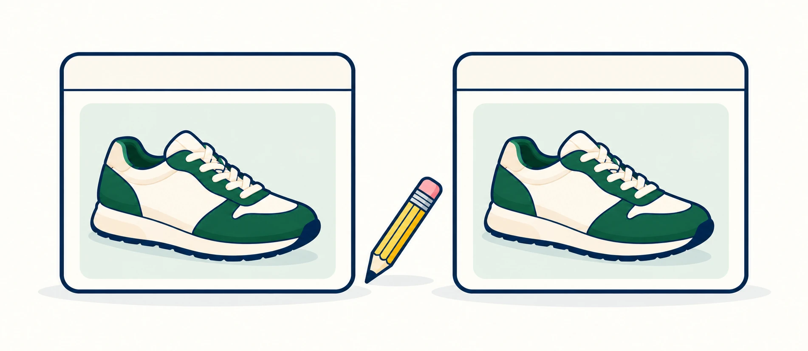

A/B testing sounds simple: change something, show version A to some shoppers and version B to others, then see which performs better.
The dangerous part is the word something. If you change the title, description, image order, benefits, and call to action at the same time, the result may tell you the page changed. It cannot reliably tell you why.
1. Start with a hypothesis, not a redesign.
Bad test: “Let’s make the product page better.”
Useful test: “Putting the primary product benefit in the first sentence will help shoppers understand the product faster and increase add-to-cart activity.”
A simple structure is: If we change X, we expect Y because Z.
2. A useful test has four parts.
3. Test one meaningful variable at a time.
If version B has a new title, new product image, reordered benefits, and different opening copy, you no longer know which change caused the result.

Version A
Everyday Runner
Version B
Lightweight Running Shoes for Daily Miles
Only the title changes. Keep the product image, description, and add-to-cart button the same.
4. Product titles can be tested, but carefully.
Titles influence scanning, product identification, and search context. That makes them testable, but they are also part of the product’s identity.
| Version A | Version B | Question |
|---|---|---|
| Riley Cotton Tee | Riley Oversized Cotton Tee | Does the differentiating fit detail help shoppers understand the product faster? |
For the underlying naming framework, see Product Titles 101: What Should Actually Go in One?.
5. Description openings are excellent testing territory.
The first lines set the information priority. You can test lifestyle-led, product-led, problem-led, benefit-led, or use-case-led openings while leaving the rest of the description alone.
| A | B |
|---|---|
| Made for everyday adventures. | Double-wall insulation keeps drinks cold for up to 12 hours. |
6. Benefit order can change what shoppers see first.
The same benefits can produce a different experience when their order changes. Testing priority can help reveal which information deserves the top spot.
| Version A | Version B |
|---|---|
| 1. Sustainability | 1. Easy care |
| 2. Easy care | 2. Fit |
| 3. Fit | 3. Sustainability |
| 4. Construction | 4. Construction |
7. Images are powerful variables, but isolate the change.
You might test a lifestyle image versus a clean product image first, a model image versus a flat product image, or one detail shot earlier in the gallery.
Do not replace the entire gallery if the question is whether the first image communicates the product more effectively.
For image metadata itself, see Product Image Metadata: Filenames vs. Alt Text vs. Visible Copy.
8. Measure behavior that matches the hypothesis.
| Test | Useful signals |
|---|---|
| Product title | Product clicks, engagement |
| Description opening | Add-to-cart, engagement |
| Benefit order | Add-to-cart, interaction |
| Hero image | Clicks, add-to-cart |
| Product information | Add-to-cart, conversion, fewer clarification questions |
9. Do not call a tiny sample a winner.
Early differences can look dramatic. Small samples are noisy, and a few individual shoppers can completely change the apparent result.
A result should have enough exposure to become meaningful before you treat it as a learning.
10. Avoid changing these casually.
- Product URLs
- Core product identity
- Pricing
- Product availability
- Fundamental variant structure
- Claims that require substantiation
- Accessibility or legally required information
11. Do not test a broken page.
A/B testing is not a substitute for fixing wrong product information, broken imagery, incorrect pricing, confusing variants, or missing care instructions.
You do not need an experiment to learn whether incorrect information should remain incorrect.
Start with How to Refresh an Existing Product Without Starting Over if the listing needs basic repair first.
12. Keep a record of what you learned.
| Field | Example |
|---|---|
| Hypothesis | Specific benefit first will improve clarity |
| Variable | Description opening |
| Version A | Lifestyle opening |
| Version B | Benefit opening |
| Primary metric | Add-to-cart |
| Learning | Shoppers responded better to immediate product utility |
Where penstack fits in
Product content testing gets messy when every variation requires copying a listing, rewriting multiple fields, and manually remembering what changed.
penstack can help keep experiments focused by creating a variation, changing one specific element, reviewing that change, publishing intentionally, and keeping the learning attached to the workflow.
The takeaway
A/B testing is not about which page looks better. It is about what specific question the experiment can answer. The cleanest tests use one hypothesis, one meaningful variable, one relevant metric, and enough evidence.
Make product experimentation easier to manage.
Create focused variations, test content intentionally, and keep what you learn connected to the product workflow.